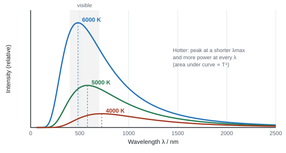
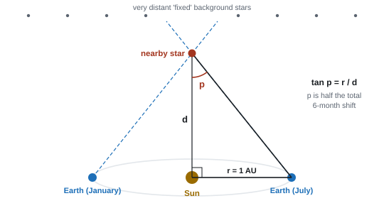
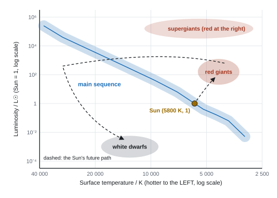

Astrophysics & Cosmology
We will never visit another star, yet we know how hot stars are, how big and how far away they are, and how they live and die. All of it comes from light that reaches us: a star's spectrum gives its temperature, its brightness and distance give its power and size, and the redshift of distant galaxies reveals an expanding universe with a finite age.
Spec161Black-body radiators
Understand what a black-body radiator is, and interpret its radiation curves.
Definitions
- A black body is an idealised object that absorbs all the electromagnetic radiation falling on it (it reflects and transmits none). It is also the best possible emitter at any temperature.
- The radiation it emits depends only on its temperature. Everything above 0 K emits thermal radiation; at room temperature it is mostly infrared.
- Stars are a good approximation to black bodies. Real hot objects (a lamp filament, a glowing coal) are not perfect: they emit less than an ideal black body at the same temperature.
The curves

Features to describe or draw:
- A continuous spectrum: some radiation at every wavelength. It rises steeply from short wavelengths to a peak, then falls more gradually.
- As temperature rises: the peak moves to shorter wavelength (Wien's law, 163); the peak is higher; the total area (total power) increases (Stefan–Boltzmann law, 162).
- Curves for different temperatures never cross: a hotter body emits more at every wavelength.
- Colour: a cooler star peaks in the red or infrared and looks red; a hotter one peaks in the blue or UV and looks blue-white. The Sun peaks near 500 nm (green), but because it emits across the whole visible range, it looks white.
- If the graph is plotted against frequency instead of wavelength, the hotter curve peaks at a higher frequency.
- "λmax decreases as the temperature rises"; "peak intensity and total power increase"; "the curve is continuous".
- A hot lamp filament is "not a perfect black-body radiator", or the glass bulb absorbs some radiation (WPH15 Jun 2025: fewer than 10% gave this; most wrote "energy is transferred to the surroundings").
Often asked as: MCQs comparing curves (including against frequency); "show that this body is not an ideal black body"; reading λmax from a spectrum (163).
Drawing curves that cross, or a hotter curve peaking at a longer wavelength. Thinking a black body must look black: a hot black body glows (the Sun).
Spec162The Stefan-Boltzmann law
Use L = σAT⁴ for a black-body radiator.
The law
Stefan–Boltzmann law
- L = luminosity: the total power emitted (W); σ = Stefan–Boltzmann constant = 5.67 × 10⁻⁸ W m⁻² K⁻⁴; A = surface area (m²); T = surface temperature (K).
- For a spherical star of radius r: A = 4πr² (not in the booklet), so L = 4πr²σT⁴.
- L ∝ r²T⁴: temperature has a huge effect. Doubling T multiplies L by 16.
The radius of the Sun
The Sun has L = 3.85 × 10²⁶ W and surface temperature 5800 K. Find its radius.
r = √(L/(4πσT⁴)) = √(3.85 × 10²⁶/(4π × 5.67 × 10⁻⁸ × 5800⁴)) = √(4.78 × 10¹⁷) = 6.9 × 10⁸ m
Ratio of luminosities
Star X has twice the surface temperature and half the radius of star Y. Find LX/LY.
LX/LY = (rX/rY)² × (TX/TY)⁴ = (½)² × 2⁴ = 4
Many star questions chain three equations: Wien (λmax → T), Stefan–Boltzmann (T and r ↔ L), intensity (L and d ↔ I). Decide which quantity each step gives you before you start, and keep T in kelvin.
- "Use of L = σAT⁴" and "use of A = 4πr²" are separate marks (WPH15 Oct 2021).
- Comparison needs a unit: "candidates should provide a unit for L (or T), otherwise a valid comparison cannot be justified" (WPH15 Oct 2022 ER). L is in W (one mark scheme printed W m⁻² in error).
Often asked as: radius of a star from L and T; T from L and r; L compared with a fraction of the Sun's; ratios of L or r; a probe or planet's energy balance.
Using πr² or the volume of a sphere instead of 4πr². Forgetting the fourth power. Using a star's distance d in place of its radius r. Not converting a wavelength to metres when Wien's law gives T first.
Spec163Wien's law
Use λmaxT = 2.898 × 10⁻³ m K for a black-body radiator.
The law
Wien's law
- λmax = wavelength at which the intensity is greatest (m); T = surface temperature (K).
- λmax ∝ 1/T: hotter bodies peak at shorter wavelengths.
- The unit is metre kelvin (m K), not millikelvin: don't multiply by 10⁻³ as a "conversion".
Temperatures from peaks
(a) The Sun's spectrum peaks at 500 nm. T = 2.898 × 10⁻³/(500 × 10⁻⁹) = 5800 K
(b) A red giant's spectrum peaks at 850 nm. T = 2.898 × 10⁻³/(850 × 10⁻⁹) = 3400 K
The red giant's peak is in the infrared, but it is still visible: it emits over a range of wavelengths, and the most intense visible light is at the red end, so it looks red.
The Sun has luminosity \(3.83\times10^{26}\) W and radius \(6.96\times10^8\) m. Calculate its surface temperature and the wavelength at which its spectrum peaks.
Show solution
Rearrange \(L = \sigma 4\pi r^2 T^4\):
\[ T^4 = \frac{L}{4\pi r^2\sigma} = \frac{3.83\times10^{26}}{4\pi\times(6.96\times10^8)^2\times5.67\times10^{-8}} = 1.11\times10^{15}\ \text{K}^4 \] \[ T = (1.11\times10^{15})^{1/4} = 5770\ \text{K} \]Then Wien's law:
\[ \lambda_\text{max} = \frac{2.898\times10^{-3}}{5770} = 5.02\times10^{-7}\ \text{m} = 502\ \text{nm} \]That is green light, in the middle of the visible spectrum. The Sun gives out plenty of every visible colour, which is why sunlight looks white rather than green.
A red supergiant has a luminosity of \(4.5\times10^{31}\) W and its spectrum peaks at \(8.5\times10^{-7}\) m. Calculate its radius and compare it with the Sun's (\(6.96\times10^8\) m).
Show solution
First the temperature, from Wien's law:
\[ T = \frac{2.898\times10^{-3}}{8.5\times10^{-7}} = 3410\ \text{K} \]Then rearrange \(L = 4\pi r^2\sigma T^4\) for \(r\):
\[ r = \sqrt{\frac{L}{4\pi\sigma T^4}} = \sqrt{\frac{4.5\times10^{31}}{4\pi\times5.67\times10^{-8}\times3410^4}} = 6.8\times10^{11}\ \text{m} \]That is about 980 times the Sun's radius. Placed where the Sun is, it would reach most of the way to Jupiter's orbit. It is cooler than the Sun but 120 000 times more luminous because its surface area is a million times bigger.
- "Accept a reasonable attempt to read λmax from the graph" (WPH15 Jun 2026); show the reading on the graph, especially in a "show that".
- λmax in the infrared "does not mean the star is invisible": there is a range of wavelengths about λmax, and the visible part is mostly red (WPH15 Jan 2026, Oct 2021).
- Give T to at least 2 s.f. (WPH15 Jun 2023).
Often asked as: read λmax from a spectrum and calculate T; peak wavelength of a star; colour of a star; red dwarfs on an HR diagram.
Applying an extra 10⁻³ because of the "m K" unit. Not converting nm to m. Reading the peak of the wrong curve.
Spec164Intensity and luminosity: the inverse square law
Use I = L/4πd², where L is luminosity and d is the distance from the source.
Inverse-square law for radiation
- A star radiates power L equally in all directions. At distance d it is spread over a sphere of area 4πd². The intensity (power per unit area received, W m⁻²) is
Intensity of radiation
A star of luminosity \(L\) radiates equally in all directions. At a distance \(d\), all of that power passes through the surface of a sphere of radius \(d\):
\[ A = 4\pi d^2 \]Intensity is power per unit area, measured in W m⁻²:
\[ \boxed{I = \frac{L}{4\pi d^2}} \]Double the distance and the area is four times bigger, so the intensity is a quarter: the same inverse-square law as gravity.
- Intensity is what we measure at the Earth (apparent brightness). Luminosity is the star's total power output (an intrinsic property).
- Double the distance and the intensity falls to a quarter. This assumes nothing absorbs the radiation on the way (dust and gas would reduce I).
The Sun's luminosity from the solar constant
Just outside the Earth's atmosphere the Sun's intensity is 1360 W m⁻². The Earth–Sun distance is 1.50 × 10¹¹ m.
L = 4πd²I = 4π × (1.50 × 10¹¹)² × 1360 = 3.8 × 10²⁶ W
Comparing two stars
Star P is 3 times as luminous as star Q but twice as far away. How do their intensities at the Earth compare?
IP/IQ = (LP/LQ) × (dQ/dP)² = 3 × (½)² = 0.75: P appears slightly dimmer.
- "Use of I = L/4πd²". When you quote it in a written answer, define I and L (WPH15 Jan 2024 ER: symbols often undefined).
- Finish ratio or claim questions with a comparison (WPH15 Oct 2024: "Sirius appears 3 times, not twice, as bright").
Often asked as: L from I and d (Sun, a fast radio burst); d from I and L; ratio and claim questions; power collected by a detector or solar panel of known area (P = IA).
Confusing intensity with luminosity (widespread). Using the radius of the star instead of the distance to it. Circular arguments (using I = L/4πd² to get L and then using the same equation to get d).
Examined in past papers even though the spec doesn't list it.
- Power received by a detector of area A: P = IA (WPH15 Jun 2021).
- Energy balance on a planet: the planet intercepts sunlight over a disc (πR²) but radiates from its whole surface (4πR²), so the average intensity over its surface is a quarter of the incoming intensity (WPH15 Jun 2026).
Spec165Trigonometric parallax
Understand how trigonometric parallax is used to measure astronomical distances.
The method

- Measure the angular position of the nearby star against the background of very distant ("fixed") stars.
- Measure it again six months later, when the Earth is on the opposite side of its orbit: the baseline is the diameter of the orbit.
- The star appears to have shifted by an angle 2p. The parallax angle p is half of this.
- Knowing the radius of the Earth's orbit (r = 1 AU = 1.50 × 10¹¹ m), use trigonometry:
Trigonometric parallax
The Sun, the Earth and the star make a right-angled triangle. The side opposite \(p\) is 1 AU, and the long side is the distance \(d\):
\[ \tan p = \frac{1\ \text{AU}}{d} \]The angle is tiny, so \(\tan p \approx p\) with \(p\) in radians:
\[ d = \frac{1\ \text{AU}}{p} \]1 arcsecond is \(\tfrac{1}{3600}\times\tfrac{\pi}{180} = 4.85\times10^{-6}\) rad, so a star with \(p\) = 1 arcsecond is at \(1.50\times10^{11}/4.85\times10^{-6} = 3.09\times10^{16}\) m, which is 1 pc. In these units:
\[ \boxed{d\ (\text{pc}) = \frac{1}{p\ (\text{arcseconds})}} \]Units
- 1 arcsecond (″) = 1/3600 of a degree.
- Parsec (pc): the distance at which the parallax angle is 1″. 1 pc = 3.09 × 10¹⁶ m = 3.26 light-years. Then d (pc) = 1/p (arcsec).
- Light-year: the distance light travels in a year = 3.00 × 10⁸ × 3.15 × 10⁷ = 9.46 × 10¹⁵ m.
Limits
- The further the star, the smaller the parallax angle. Beyond a few hundred parsecs (from the Earth's surface; much further from satellites such as Gaia) the angle is too small to measure accurately: it is smaller than the telescope's resolution, and the percentage uncertainty becomes too large. Further stars need standard candles (166).
Distance from parallax
A star has a parallax angle of 0.20″. Find its distance in pc and in m.
d = 1/p = 1/0.20 = 5.0 pc
In radians: p = 0.20/3600 × π/180 = 9.70 × 10⁻⁷ rad
d = r/tan p = 1.50 × 10¹¹/tan(9.70 × 10⁻⁷) = 1.5 × 10¹⁷ m (check: 5.0 × 3.09 × 10¹⁶ m)
Proxima Centauri, the nearest star to the Sun, has a parallax angle of 0.768 arcseconds. Calculate its distance in parsecs, metres and light-years. (1 light-year = \(9.46\times10^{15}\) m)
Show solution
\[ d = \frac{1}{0.768} = 1.30\ \text{pc} \] \[ d = 1.30\times3.09\times10^{16} = 4.02\times10^{16}\ \text{m} = \frac{4.02\times10^{16}}{9.46\times10^{15}} = 4.25\ \text{light-years} \]The star Sirius A has a parallax angle of 0.379 arcseconds. The intensity of its radiation at the Earth is \(1.17\times10^{-7}\ \text{W m}^{-2}\) and its spectrum peaks at 292 nm. Calculate (a) its distance, (b) its luminosity, (c) its surface temperature and (d) its radius.
Show solution
(a) \(d = 1/0.379 = 2.64\ \text{pc} = 2.64\times3.09\times10^{16} = 8.15\times10^{16}\ \text{m}\)
(b) Rearrange \(I = L/4\pi d^2\):
\[ L = 4\pi d^2 I = 4\pi\times(8.15\times10^{16})^2\times1.17\times10^{-7} = 9.77\times10^{27}\ \text{W} \](c) Wien's law:
\[ T = \frac{2.898\times10^{-3}}{292\times10^{-9}} = 9920\ \text{K} \](d) Stefan–Boltzmann law:
\[ r = \sqrt{\frac{L}{4\pi\sigma T^4}} = \sqrt{\frac{9.77\times10^{27}}{4\pi\times5.67\times10^{-8}\times9920^4}} = 1.19\times10^9\ \text{m} \]Sirius A is about 1.7 times the radius of the Sun and 25 times as luminous. Notice the chain: parallax gives \(d\), \(d\) and \(I\) give \(L\), the spectrum gives \(T\), and \(L\) and \(T\) give \(r\).
Describe the method (WPH15 Oct 2021, Jan 2023, Oct 2025):
- measure the "change in angle" / angular position of the star "over a 6-month period" (or across the diameter of the Earth's orbit);
- "against the background of distant (fixed) stars";
- "the radius / diameter of the Earth's orbit (about the Sun) must be known" and "trigonometry is used to calculate the distance" ("do not accept Pythagoras").
- A labelled diagram is accepted.
- Limit: "the parallax angle is too small (to be measured)", the uncertainty is too high: the idea that the angle can't be measured, not that the star can't be seen (WPH15 Jun 2025).
Often asked as: describe the method; show the method fails beyond some distance by comparing the angle with a telescope's resolution (allow sin θ or tan θ); MCQ on what parallax is for.
Inverting the triangle (d = tan p/r). Forgetting to say the Earth–Sun distance must be known. Calculator in degrees when using radians (or vice versa). Using the full 6-month shift as p.
Spec166Standard candles
Understand how distances can be found from the intensity received from standard candles (objects of known luminosity).
The idea
- A standard candle is an astronomical object of known luminosity.
- Measure the intensity I received at the Earth. Since L is known, use the inverse-square law to find the distance:
Distance from a standard candle
Examples
- Cepheid variable stars: their brightness varies regularly, and the period of the variation is linked to their luminosity (period–luminosity relationship: longer period, more luminous). Measure the period → read L from the relationship → measure I → find d. Useful to tens of megaparsecs.
- Type Ia supernovae: a white dwarf in a binary system that explodes always reaches nearly the same peak luminosity. So bright they can be seen in very distant galaxies (thousands of megaparsecs).
The distance ladder
- Parallax gives distances to nearby stars, including some Cepheids, which calibrates the Cepheid period–luminosity relationship. Cepheids in nearby galaxies that also host type Ia supernovae calibrate the supernovae. Each rung extends the range of the one before.
- Uncertainties: dust absorbs light (I measured too low, d too big); the calibration of L has its own uncertainty, which carries up the ladder.
Distance to a Cepheid
A Cepheid's period gives its luminosity as 3.0 × 10³⁰ W. The intensity received is 2.0 × 10⁻¹³ W m⁻². Find its distance.
d = √(L/4πI) = √(3.0 × 10³⁰/(4π × 2.0 × 10⁻¹³)) = 1.1 × 10²¹ m (about 35 kpc, or 1.2 × 10⁵ light-years)
- Standard candle: "a (stellar) object of known luminosity" (do not accept intensity or brightness for luminosity) (WPH15 Jun 2021, Jun 2025).
- Method: "measure the intensity received (on Earth)", "the luminosity is known", "use the inverse square law / I = L/4πd² (with symbols defined) to determine the distance". Intensity is "determined", not "calculated" (WPH15 Jun 2023, Jun 2025).
- Distance ladder (6-mark) (WPH15 Oct 2022): parallax to a nearby standard candle, measure its intensity and find L; find a standard candle of the same type in a distant galaxy; measure its intensity; use the inverse-square law.
- Cepheids: "measure the period of the intensity variation", use the period–luminosity relationship to find L.
Often asked as: define a standard candle; describe how one gives a distance; the distance-ladder 6-marker; Cepheid period from several cycles on a light curve; read a log period–luminosity graph.
Mixing the standard-candle method with parallax in one answer. Confusing the standard candle with the galaxy it is in. Not defining I and L. Reading a period from one cycle instead of several. Taking a gradient on a log graph instead of reading values.
Examined in past papers even though the spec doesn't list it.
- Cepheid period–luminosity relationship and type Ia supernovae as the named standard candles (WPH15 Jan 2025, Oct 2025).
- Reading values from a period–luminosity graph with logarithmic scales (WPH15 Jan 2025).
Spec167The Hertzsprung-Russell diagram
Sketch and interpret a simple Hertzsprung–Russell diagram of stellar luminosity against surface temperature.
The axes
- y-axis: luminosity (usually relative to the Sun, L☉ = 1), on a logarithmic scale, typically 10⁻⁴ to 10⁶.
- x-axis: surface temperature in K, on a logarithmic scale that runs backwards: hottest on the left (about 40 000 K) to coolest on the right (about 2500 K).

The regions
| Region | Where | Temperature, luminosity | Why (from L = 4πr²σT⁴) |
|---|---|---|---|
| Main sequence | diagonal band, top-left to bottom-right | hot and bright to cool and dim | stars fusing hydrogen in their cores; the more massive, the hotter and brighter |
| Red giants | above the main sequence, on the right | cool (3000–5000 K), L about 10–10³ | low T but high L, so a large radius |
| Red supergiants | top right | cool, L up to about 10⁶ | even larger |
| White dwarfs | bottom left | hot (about 10 000 K or more), L about 10⁻⁴–10⁻² | high T but low L, so a tiny radius (about Earth-sized) |
- The Sun: about 5800 K and luminosity 1, in the middle of the main sequence.
- The diagram plots stars at one moment. A star's position changes as it evolves (168).
Sirius B is a white dwarf with surface temperature 25 000 K and luminosity \(2.1\times10^{25}\) W. Show that it is only a little larger than the Earth (radius \(6.37\times10^6\) m).
Show solution
\[ r = \sqrt{\frac{L}{4\pi\sigma T^4}} = \sqrt{\frac{2.1\times10^{25}}{4\pi\times5.67\times10^{-8}\times(25\,000)^4}} = 8.7\times10^6\ \text{m} \]That is about 1.4 Earth radii, yet Sirius B has about the same mass as the Sun. It is hotter than the Sun but 18 times less luminous, because its surface area is so small.
- Axes: luminosity (log scale) up; temperature with a reversed scale, with units (K or °C, not "°K"), at least 2–3 values over a range like 2000–60 000 K (WPH15 Oct 2025, Jun 2026).
- Region names: "main sequence", "red giants", "white dwarfs"; "giants" or "dwarves" alone not accepted (WPH15 Jun 2023). "Red supergiants", not "supergiants" alone (WPH15 Oct 2025).
- Plot the Sun at luminosity 1 and about 5800 K (WPH15 Oct 2024).
Often asked as: label the axes with a reversed temperature scale; label regions A, B, C; mark the Sun; interpret a cluster's diagram (red giants and white dwarfs present, so not a young cluster).
Temperature increasing to the right. Linear scales. Leaving the reversed temperature range blank. Writing "giants" without "red", or "dwarfs" without "white". Plotting the Sun in the wrong place.
Examined in past papers even though the spec doesn't list it.
- Reasoning about size from position, with L = 4πr²σT⁴ (top right = huge, bottom left = tiny) (WPH15 Oct 2025).
- A cluster containing red giants and white dwarfs is old, because its massive stars have already left the main sequence (WPH15 Jun 2023).
Spec168The HR diagram and the life cycle of stars
Relate the Hertzsprung–Russell diagram to the life cycle of stars.
Birth and the main sequence
- A cloud of gas and dust (nebula) collapses under gravity, heating up into a protostar.
- When the core is hot and dense enough, hydrogen fuses to helium: the star joins the main sequence, where it spends about 90% of its life.
- On the main sequence the inward pull of gravity is balanced by the outward pressure from the hot gas and radiation. Position on the main sequence depends on mass: massive stars are hotter and brighter (top left).
- Massive stars have shorter lives: they have more fuel, but their much higher temperature makes the rate of fusion far higher, so they use up their core hydrogen much faster.
A Sun-like star (below about 8 solar masses)
- Hydrogen in the core runs out: fusion in the core stops (the rate of fusion falls).
- The core contracts under gravity and heats up. Hydrogen fuses in a shell around the core.
- The outer layers expand and cool: the star becomes a red giant (moves up and to the right on the HR diagram: larger, cooler surface, more luminous).
- The core temperature rises enough for helium fusion to start (helium → carbon and oxygen).
- When fusion ends, the outer layers drift away (a planetary nebula). The hot core collapses to a white dwarf: small, very dense, hot, low luminosity, no fusion. On the HR diagram the star moves across to the left and down to the bottom-left corner.
- The white dwarf slowly cools and dims (moves down and right).
A massive star (above about 8 solar masses)
- Becomes a red supergiant, fusing successively heavier elements, up to iron. Fusing iron releases no energy (iron has the highest binding energy per nucleon, 135).
- The iron core collapses suddenly; the star explodes as a supernova.
- The remaining core becomes a neutron star, or a black hole if it is massive enough (above about 3 solar masses).
The six points in every version of the 6-mark (WPH15 Jan 2021, Jun 2024, Jun 2025, Jun 2026 (8 marks)):
- IC1 hydrogen is fused in the core (main sequence);
- IC2 when the hydrogen in the core is used up, the rate of fusion decreases / ceases;
- IC3 the core collapses / contracts under gravity;
- IC4 the temperature rises to start helium fusion ("not 'temperature rises after helium fusion starts'");
- IC5 the star expands into a red giant (larger area, lower surface temperature);
- IC6 when no further fusion takes place, the core / star collapses into a white dwarf (smaller, hotter).
- Massive stars "spend less time on the main sequence because of a higher rate of fusion" (WPH15 Jun 2025).
Often asked as: describe a Sun-like star's evolution using the letters marked on a given HR diagram (P, Q, S...); short versions worth 3 marks; why massive stars leave the main sequence first; properties of a white dwarf.
Too much detail when the command word is "describe". Missing "red" or "white". Not using the letters on the diagram. Describing the balance of forces instead of the evolution. Bringing in fusion conditions (electrostatic repulsion), which answers a different question. Getting the order wrong: the core heats up before helium fusion starts.
Spec169The Doppler effect
Understand how relative motion between a wave source and an observer causes a shift in observed frequency.
Why it happens
- A source moving towards you: each wavefront is emitted a little closer to you than the last, so the wavefronts are squashed together. You receive a shorter wavelength and a higher frequency.
- A source moving away: the wavefronts are stretched apart: longer wavelength, lower frequency.
- The source itself emits the same frequency throughout; only the received frequency changes. The faster the relative motion, the bigger the shift. Only the component of velocity along the line of sight matters.
- Sound: a passing ambulance's siren drops in pitch as it goes by.
Light from space
- A star's spectrum has absorption lines at wavelengths fixed by the elements present. Comparing them with the same lines measured in a laboratory shows a shift:
- redshift: lines shifted to longer wavelengths, so the source is moving away;
- blueshift: lines shifted to shorter wavelengths, so the source is approaching.
- The whole pattern of lines shifts together, which is how you know it's the same element.
Uses
- Rotation: one edge of the Sun (or a galaxy) moves towards us and the other away. Light from the approaching edge is blueshifted, the receding edge redshifted. The difference between the two edges is twice the shift of each.
- Exoplanets: an orbiting planet makes its star wobble. The star's velocity along our line of sight changes periodically, so its lines shift back and forth.
- Binary stars and the expansion of the universe (170).
- "Light from the edge of the Sun moving towards the Earth is received with a shorter wavelength" (accept blueshift); "the receding edge gives a longer wavelength" (accept redshift) (WPH15 Oct 2021).
- "The source is moving away, so there is a Doppler shift and the wavelength received is greater" (WPH15 Oct 2024).
- Planet detection: the planet pulls the star, "so its velocity relative to the Earth varies", giving "a varying Doppler shift" (WPH15 Oct 2020).
Often asked as: explain a shift in context (Sun's rotation, a receding star, Andromeda approaching); planet detection; speed camera; MCQ (Doppler shifts can't directly show acceleration).
Saying the lines "turn red": they shift towards longer wavelengths. Getting approaching and receding the wrong way round. Using the full edge-to-edge difference as one Doppler shift. Not stating the direction of motion.
Examined in past papers even though the spec doesn't list it.
- Edge-to-edge solar rotation: the measured difference is twice each edge's shift; many missed the factor of 2 (WPH15 Jan 2025).
- An exoplanet's tiny shift may be below the spectrometer's resolution (0.025 nm against 0.05 nm) (WPH15 Jun 2024).
Spec170Redshift and Hubble's law
Use z = Δλ/λ ≈ Δf/f ≈ v/c for a source moving relative to an observer, and v = H₀d for objects at cosmological distances.
Redshift
Redshift
A source moving away at speed \(v\) emits a crest, then the next crest one period \(T = 1/f\) later. In that time the first crest has travelled \(cT\) and the source has moved \(vT\) further away:
\[ \lambda_\text{observed} = cT + vT = \lambda + vT \]So the change in wavelength is \(\Delta\lambda = vT\). Divide by \(\lambda = cT\):
\[ \frac{\Delta\lambda}{\lambda} = \frac{vT}{cT} = \frac{v}{c} \]This fractional change is called the redshift, \(z\). For speeds much less than \(c\) the fractional change in frequency is the same size, so
\[ \boxed{z = \frac{\Delta\lambda}{\lambda} \approx \frac{\Delta f}{f} \approx \frac{v}{c}} \]For a redshift the frequency goes down, so \(\Delta f\) is negative; the equation uses its size. The approximation only works when \(v \ll c\).
- z = redshift (no unit); Δλ = λobserved − λemitted; λ = the emitted (laboratory, rest) wavelength; v = speed of the source along the line of sight; c = 3.00 × 10⁸ m s⁻¹.
- Valid only when v is much less than c.
- Positive z (longer wavelength) means receding; a negative value means approaching (blueshift).
- Δλ/λ is a ratio, so λ can stay in nm. Keep enough significant figures: the shift is usually a small difference between two close numbers.
Hubble's law
- Light from distant galaxies is redshifted, and the further away the galaxy, the bigger the redshift. So galaxies are receding with speeds proportional to their distance:
Hubble's law
- v = recession speed; d = distance; H₀ = the Hubble constant, the gradient of a v–d graph.
- Units: with v in m s⁻¹ and d in m, H₀ is in s⁻¹. Astronomers usually quote km s⁻¹ Mpc⁻¹ (about 70 km s⁻¹ Mpc⁻¹). To convert, 1 Mpc = 3.09 × 10²² m:
70 km s⁻¹ Mpc⁻¹ = 70 × 10³/3.09 × 10²² = 2.3 × 10⁻¹⁸ s⁻¹ - Every distant galaxy receding from every other is the evidence that the universe is expanding.
Age of the universe
- If the expansion rate has always been the same, everything was together a time t ago, where d = vt. With v = H₀d:
Age of the universe
Suppose a galaxy now at distance \(d\) has been moving away from us at a constant speed \(v\) since the Big Bang. The time it has taken is
\[ t = \frac{d}{v} \]Hubble's law says \(v = H_0 d\), so \(d\) cancels and the answer is the same for every galaxy:
\[ \boxed{t \approx \frac{1}{H_0}} \]With \(H_0 = 2.27\times10^{-18}\ \text{s}^{-1}\) and 1 year = \(3.15\times10^7\) s:
\[ t = \frac{1}{2.27\times10^{-18}} = 4.4\times10^{17}\ \text{s} = 1.4\times10^{10}\ \text{years} \]The estimate assumes the expansion rate has always been the same. If gravity has slowed the expansion, galaxies used to move faster and the true age is less than \(1/H_0\).
- With H₀ = 2.3 × 10⁻¹⁸ s⁻¹: 1/H₀ = 4.4 × 10¹⁷ s ≈ 1.4 × 10¹⁰ years (14 billion years).
- A smaller H₀ gives an older universe (halve H₀ and the age doubles).
Speed, distance and age
A hydrogen line with rest wavelength 656.3 nm is observed at 662.9 nm in a galaxy's spectrum. H₀ = 70 km s⁻¹ Mpc⁻¹ (1 Mpc = 3.09 × 10²² m; 1 year = 3.15 × 10⁷ s).
z = Δλ/λ = (662.9 − 656.3)/656.3 = 6.6/656.3 = 0.0101
v = zc = 0.0101 × 3.00 × 10⁸ = 3.0 × 10⁶ m s⁻¹, receding (redshift)
H₀ = 70 × 10³/3.09 × 10²² = 2.27 × 10⁻¹⁸ s⁻¹
d = v/H₀ = 3.02 × 10⁶/2.27 × 10⁻¹⁸ = 1.3 × 10²⁴ m (about 43 Mpc)
Age estimate: 1/H₀ = 1/2.27 × 10⁻¹⁸ = 4.41 × 10¹⁷ s = 4.41 × 10¹⁷/3.15 × 10⁷ = 1.4 × 10¹⁰ years
The hydrogen line that is at 656.3 nm in the laboratory is observed at 671.9 nm in the spectrum of a distant galaxy. Calculate the redshift and the galaxy's speed. Is it moving towards us or away from us?
Show solution
\[ z = \frac{\Delta\lambda}{\lambda} = \frac{671.9 - 656.3}{656.3} = \frac{15.6}{656.3} = 0.0238 \] \[ v = zc = 0.0238\times3.00\times10^8 = 7.13\times10^6\ \text{m s}^{-1} \]The wavelength has increased (redshift), so the galaxy is moving away from us, at about 2.4% of the speed of light.
A type Ia supernova in the galaxy from the redshift example has a peak luminosity of \(2.0\times10^{36}\) W, and its peak intensity at the Earth is \(1.6\times10^{-14}\ \text{W m}^{-2}\). Use this and the galaxy's speed, \(7.13\times10^6\ \text{m s}^{-1}\), to find the Hubble constant and estimate the age of the universe.
Show solution
The supernova is a standard candle, so rearrange \(I = L/4\pi d^2\):
\[ d = \sqrt{\frac{L}{4\pi I}} = \sqrt{\frac{2.0\times10^{36}}{4\pi\times1.6\times10^{-14}}} = 3.15\times10^{24}\ \text{m} \quad(\approx 100\ \text{Mpc}) \] \[ H_0 = \frac{v}{d} = \frac{7.13\times10^6}{3.15\times10^{24}} = 2.26\times10^{-18}\ \text{s}^{-1} \] \[ t \approx \frac{1}{H_0} = 4.42\times10^{17}\ \text{s} = \frac{4.42\times10^{17}}{3.15\times10^7} = 1.4\times10^{10}\ \text{years} \]- "Must have the laboratory wavelength in the denominator" (WPH15 Oct 2024, Oct 2025); "allow use of z = Δf/f and z = v/c".
- Approaching: a negative v, with the conclusion that the galaxy (e.g. Andromeda) "is moving towards the Earth" (WPH15 Jan 2021).
- Halving H₀ doubles the age; "H₀ is lower so the universe is older" alone gets only 1 mark (WPH15 Jun 2022).
- Testing Hubble's law from a plot: comment on a straight line through the origin, the scatter, and the gradient equal to H₀ (WPH15 Oct 2023).
Often asked as: speed from a wavelength or frequency shift; distance from v = H₀d; convert H₀ to s⁻¹ and find the age; H₀ from the gradient of a z–d graph (× c); order galaxies by redshift.
Putting the observed wavelength in the denominator. Thinking Δλ is already given when the question gives two wavelengths. Rounding the wavelengths before subtracting. Mixing km and m in H₀. Forgetting "× 10⁹" when reading distances in billions of light-years. Saying 1/H₀ gives the size of the universe (it gives an estimate of its age).
Examined in past papers even though the spec doesn't list it.
- H₀ in s⁻¹ and in km s⁻¹ Mpc⁻¹, with conversions given in the question; you don't need to know the megaparsec in advance (WPH15 Jun 2022, Jun 2025).
- 1/H₀ assumes the universe has expanded at a constant rate (WPH15 Jun 2022).
- Light from very distant galaxies can be redshifted out of the visible into the infrared (WPH15 Oct 2022).
Spec171The age and fate of the universe: H0 and dark matter
Understand why the value of the Hubble constant and the possible existence of dark matter make the age and ultimate fate of the universe controversial.
The Big Bang
The universe began about 14 billion years ago in an extremely hot, dense state and has been expanding and cooling ever since. Space itself is expanding: galaxies are not flying through space away from a central point, and there is no centre. The evidence:
- Redshift of distant galaxies (Hubble's law): everything is moving apart, so in the past it was closer together. Running the expansion back gives a starting time (1/H₀).
- Cosmic microwave background radiation (CMB): weak microwave radiation arriving from every direction, almost uniform, with a perfect black-body spectrum at about 2.7 K. It was released about 380 000 years after the Big Bang, when the universe had cooled (to about 3000 K) enough for atoms to form and radiation could travel freely. The expansion since then has stretched its wavelength (redshifted it) about a thousand times, into the microwave region. A steady, unchanging universe can't explain it.
- The observed amounts of hydrogen and helium (about 3:1 by mass) match what the hot early universe would have made.
Why the age is uncertain
- Age ≈ 1/H₀, so the age is only as good as H₀. H₀ = gradient of v against d, and distances to galaxies are hard to measure: standard-candle luminosities are calibrated through the distance ladder, dust absorbs light, and each rung adds uncertainty.
- Different methods still disagree: measurements from the CMB give about 67 km s⁻¹ Mpc⁻¹ (1/H₀ ≈ 14.6 billion years), while Cepheids and supernovae give about 73 km s⁻¹ Mpc⁻¹ (1/H₀ ≈ 13.4 billion years). This disagreement (the "Hubble tension") is unresolved.
- 1/H₀ also assumes a constant expansion rate. Gravity slows the expansion; observations suggest it is now speeding up. Either changes the true age.
The fate depends on density
Gravity from all the matter pulls back on the expansion. What happens depends on the mean density of the universe compared with a critical density:
| Mean density | Universe | Fate |
|---|---|---|
| greater than critical | closed | expansion stops and reverses: everything contracts (a "Big Crunch") |
| equal to critical | flat | expansion slows, approaching zero but never quite stopping |
| less than critical | open | expands forever |
The critical density is tiny, about 10⁻²⁶ kg m⁻³ (a few hydrogen atoms per cubic metre), and it depends on H₀ (ρc = 3H₀²/8πG), so an uncertain H₀ also blurs the dividing line.
Dark matter
- Dark matter is matter that has mass (so exerts a gravitational force) but does not emit (or absorb) electromagnetic radiation, so we can't see it.
- Evidence: galaxy rotation curves. For a star orbiting a galaxy's centre, gravity provides the centripetal force: v = √(GM/r). If most mass were in the bright central bulge, stars far out would orbit more slowly. In fact the orbital speeds stay roughly constant far out (and orbital periods are shorter than predicted), so there must be much more mass, spread out, than we can see.
- Other evidence: gravitational lensing (light bent by more mass than is visible); galaxies in clusters moving too fast to stay bound by visible mass alone.
- Dark matter seems to be about five times as much as ordinary matter. Because we don't know exactly how much there is (or what it is), the mean density is uncertain, so we can't be sure whether the universe is open, flat or closed.
- Observations of distant type Ia supernovae suggest the expansion is accelerating. The cause is called dark energy, and it is not understood either.
Evidence for dark matter
A star orbits 5.0 × 10²⁰ m from the centre of a galaxy whose visible mass (inside that orbit) is 1.0 × 10⁴¹ kg. It is observed to orbit at 2.2 × 10⁵ m s⁻¹.
Predicted speed: v = √(GM/r) = √(6.67 × 10⁻¹¹ × 1.0 × 10⁴¹/5.0 × 10²⁰) = 1.2 × 10⁵ m s⁻¹
The observed speed is almost double. Mass needed: M = v²r/G = (2.2 × 10⁵)² × 5.0 × 10²⁰/6.67 × 10⁻¹¹ = 3.6 × 10⁴¹ kg
That is about 3.6 times the visible mass, so there must be a lot of mass that doesn't emit electromagnetic radiation: dark matter.
- Dark matter "exerts a gravitational force" / "has mass" and "does not emit electromagnetic radiation"; "do not accept light for electromagnetic radiation" (WPH15 Jan 2026).
- Rotation data: "the observed period is smaller than expected, so the gravitational force is bigger, so there must be more mass than is visible" (WPH15 Jun 2024).
- Fate: open = density less than the critical density, expands forever; closed = greater, eventually contracts; flat = equal (WPH15 Oct 2024 MCQ).
- Dark matter adds to uncertainty about the fate because "the mean density (mass) of the universe is not known" (WPH15 Jan 2022).
Often asked as: MCQs on open, closed and flat universes and on what dark matter is; use a star's orbital period or speed to argue for dark matter; explain why the fate (or age) is uncertain.
Answering a dark-matter question with redshift and Hubble's law. Saying dark matter must exist without using the data to show why. Saying it doesn't emit "light" (it must be electromagnetic radiation of any kind). Confusing "solar mass" with the mass of the dark matter. Saying the CMB is "left over from the explosion" without the cooling, the uniformity and the black-body spectrum.
Examined in past papers even though the spec doesn't list it.
- Critical density as the dividing line between open and closed universes (WPH15 Jun 2023, Oct 2024, Jan 2026 MCQs).
- Inferring dark matter from a star's orbital period or speed in a galaxy (WPH15 Jun 2024, Jan 2026).
- Uncertainty in H₀ (scatter on a Hubble plot) gives an uncertain age (WPH15 Jun 2022, Oct 2023).
Quick checks
Star X has the same radius as star Y but twice the surface temperature. What is the luminosity of X divided by the luminosity of Y?
\(L = \sigma 4\pi r^2T^4\) with the same \(r\), so \(L \propto T^4 = 2^4 = 16\).
The spectrum of star P peaks at 300 nm and that of star Q peaks at 600 nm. Which statement is correct?
Wien's law: \(\lambda_\text{max} \propto 1/T\), so half the peak wavelength means twice the temperature. You can't say which is more luminous without knowing their radii.
A star appears in the top right-hand corner of a Hertzsprung–Russell diagram. What can you say about it?
The temperature axis runs from hot on the left to cool on the right, so the top right means low \(T\) but high \(L\). From \(L = 4\pi r^2\sigma T^4\), that needs a huge radius: a red giant or supergiant.
Star A has a parallax angle of 0.05 arcseconds and star B has a parallax angle of 0.10 arcseconds. Which statement is correct?
\(d = 1/p\): A is at 20 pc and B at 10 pc. A smaller parallax angle means a more distant star.
A spectral line at 486 nm in the laboratory is observed at 491 nm in light from a galaxy. What is the galaxy's velocity?
\(z = 5/486 = 0.0103\), so \(v = zc = 3.1\times10^6\ \text{m s}^{-1}\). The wavelength got longer (redshift), so the galaxy is receding.
A new measurement gives a larger value of the Hubble constant than before. What does this suggest about the universe?
The age is about \(1/H_0\), so a bigger \(H_0\) means a younger universe: galaxies are moving apart faster, so it took less time to reach their present separations.